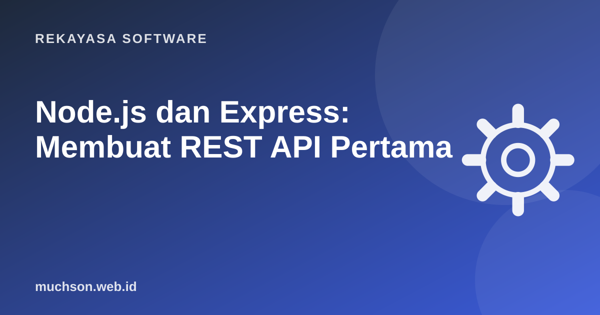

Beranda › Artikel › Rekayasa Software
Rekayasa SoftwareNode.js dan Express: Membuat REST API Pertama
Node.js memungkinkan JavaScript berjalan di server. Dengan Express, Anda bisa membuat API pertama dalam kurang dari 20 baris. Tantangannya bukan membuat API yang jalan, melainkan API yang tetap rapi, aman, dan mudah dirawat saat bertambah besar.

Mengapa Node.js cepat untuk API?
Node.js memakai event loop: satu thread utama yang tidak menunggu ketika ada operasi I/O (database, file, jaringan). Selama menunggu jawaban database, Node melayani permintaan lain. Karena itu Node sangat efisien untuk API yang banyak menunggu I/O, tetapi kurang cocok untuk perhitungan berat yang memblokir thread.
Setup proyek
mkdir api-toko && cd api-toko
npm init -y
npm install express pg zod
npm install -D nodemon// package.json
{
"type": "module",
"scripts": { "dev": "nodemon src/index.js", "start": "node src/index.js" }
}API pertama
// src/index.js
import express from 'express';
const app = express();
app.use(express.json()); // membaca body JSON
const produk = [{ id: 1, nama: 'Frame Titanium', harga: 450000 }];
app.get('/api/produk', (req, res) => res.json(produk));
app.get('/api/produk/:id', (req, res) => {
const p = produk.find(x => x.id === Number(req.params.id));
if (!p) return res.status(404).json({ error: 'Produk tidak ditemukan' });
res.json(p);
});
app.listen(3000, () => console.log('API di http://localhost:3000'));Middleware: lapisan di tengah jalan
Middleware adalah fungsi yang dijalankan sebelum (atau sesudah) handler route: mencatat log, memeriksa token, membatasi laju.
function catatLog(req, res, next) {
const mulai = Date.now();
res.on('finish', () => console.log(req.method, req.url, res.statusCode, Date.now() - mulai + 'ms'));
next(); // wajib dipanggil agar lanjut
}
app.use(catatLog);
function wajibLogin(req, res, next) {
if (!req.headers.authorization) return res.status(401).json({ error: 'Perlu login' });
next();
}
app.post('/api/produk', wajibLogin, tambahProduk);Validasi input
Jangan pernah percaya data dari klien. Library seperti Zod membuat validasi ringkas dan pesannya jelas.
import { z } from 'zod';
const ProdukBaru = z.object({
nama: z.string().min(2).max(100),
harga: z.number().int().nonnegative(),
});
async function tambahProduk(req, res) {
const hasil = ProdukBaru.safeParse(req.body);
if (!hasil.success) return res.status(422).json({ errors: hasil.error.issues });
// simpan hasil.data ke database
res.status(201).json(hasil.data);
}Koneksi PostgreSQL dan variabel lingkungan
// src/db.js
import pg from 'pg';
export const pool = new pg.Pool({ connectionString: process.env.DATABASE_URL });
// route
app.get('/api/produk', async (req, res, next) => {
try {
const { rows } = await pool.query('SELECT id, nama, harga FROM produk ORDER BY nama LIMIT 50');
res.json(rows);
} catch (e) { next(e); }
});
// jalankan dengan: node --env-file=.env src/index.js (Node 20.6+)Simpan DATABASE_URL dan secret lain di file .env, lalu masukkan .env ke .gitignore. Commit file contoh .env.example tanpa nilai asli.
Penanganan error terpusat
// diletakkan paling akhir, setelah semua route
app.use((err, req, res, next) => {
console.error(err);
res.status(err.status || 500).json({ error: 'Terjadi kesalahan di server' });
});Di Express 5, error dari fungsi async otomatis diteruskan ke handler ini. Di Express 4, bungkus dengan try/catch dan panggil next(e) seperti contoh di atas.
Struktur folder saat proyek membesar
src/
index.js # membuat app, memasang middleware
routes/produk.js # definisi route
controllers/ # menerima request, memanggil service
services/ # logika bisnis
db/ # koneksi dan query
middleware/ # auth, log, rate limit